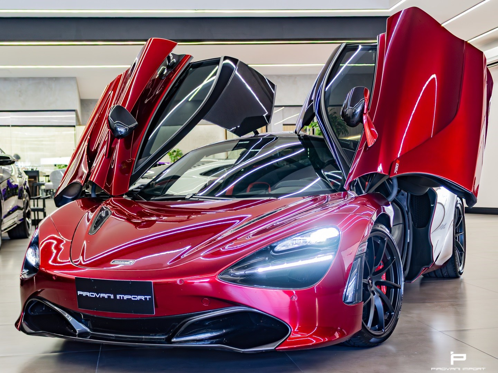

Sobre a Máquina
O McLaren 720S é um supercarro britânico projetado como uma nave espacial. A aerodinâmica extrema e a leveza do chassi em fibra de carbono o tornam imbatível. O ápice do design focado em performance.

Ficha Técnica
- Motor: 4.0 V8 Biturbo
- Potência: 720 cv
- Torque: 78,5 kgfm
- Aceleração (0-100 km/h): 2,9 segundos
- Velocidade Máxima: 341 km/h
- Tração: Traseira (RWD)
Vídeo Local
Assista ao clipe de demonstração (YouTube):